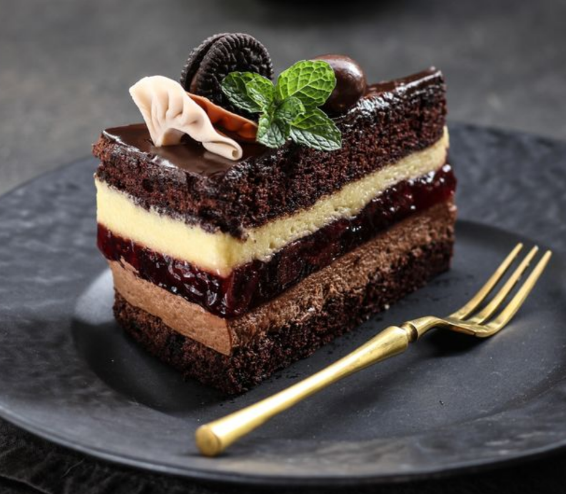
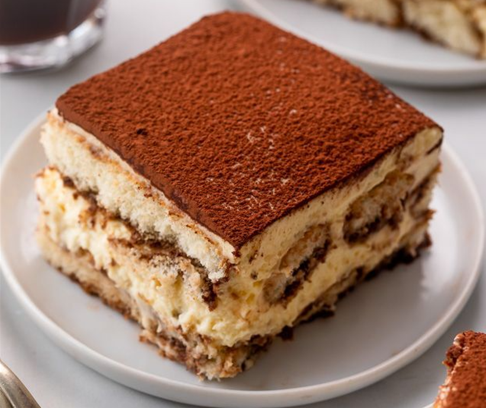

Nuestra Historia
-
Nacimiento de nuestra Pasteleria
En el año 1978, nace como una pastelería francesa, ubicada en el jirón Unión del Cercado de Lima, Lima-Perú, Don Alberto de Mirnado, nacido en Francia y casado con Mariela Ortiz, limeña nacida en los años 1939, fundaron esta pastelería, fusionando la tradición francesa con los sabores peruanos.
1978 -
Éxito de Nuestra Pastelería
La pastelería rápidamente se convirtió en un éxito gracias a las creaciones innovadoras y creativas que ofrecé. La calidad excepcional de nuestros productos y nuestra reputación por brindar un servicio de primera nos convierten en la elección favorita de la sociedad Limeña, ya sea para celebraciones especiales o simplemente para disfrutar de nuestros deliciosos postres en su día a día.
1979 -
Segunda Generación
Los hijos de Don Alberto y Doña Mariela de Mirnado, Juan Pierre de Mirnado Ortiz y Pedro Léandre de Mirnado Ortiz, se unen al negocio familiar. Continuando con el legado de sus padres, creando nuevos y deliciosos sabores para nuestra pasteleria que sorprendieron y deleitaron a nuestros clientes, atrayendo tanto a aquellos que conocían nuestra pasteleria como a las nuevas generaciones. Su dedicación y talento elevaron aún más la Pastelería Dolce Rivoluzione, llevando los sabores peruanos y la tradición francesa a nuevas alturas, ganando nuevamente popularidad entre los amantes de la pastelería.
1997 -
Actualidad
La Pastelería 'Dolce Rivoluzione' celebra su 44 aniversario como un exitoso negocio familiar que ha perdurado a lo largo del tiempo, convirtiéndose en un emblema de la tradición que fusiona la cultura francesa y peruana.
2023
MISIÓN
Nuestra misión es ofrecer a nuestros clientes una gran variedad de pasteles y postres exquisitos, donde encuentren desde sus clásicos de siempre, así como descubrir nuevos y exóticos postres que sorprendan el paladar con tales delicias. Nuestra prioridad es satisfacer los antojos de nuestros clientes y nos esforzamos constantemente en ofrecer atención de alta calidad.
VISIÓN
Nuestra visión es convertirnos en la pastelería de preferencia, así como en línea también de nuestro país, donde ofrezcamos postres de la más alta calidad junto con una atención cálida y satisfactoria para nuestros clientes. Aspiramos a nuevos lugares de nuestro país y a nivel internacional, siendo conocidos por nuestra capacidad de ofrecer desde productos tradicionales hasta innovadores y exóticos. Buscamos sorprender siempre a nuestros clientes manteniendo una imagen de alta calidad y distinción en nuestra pastelería.
